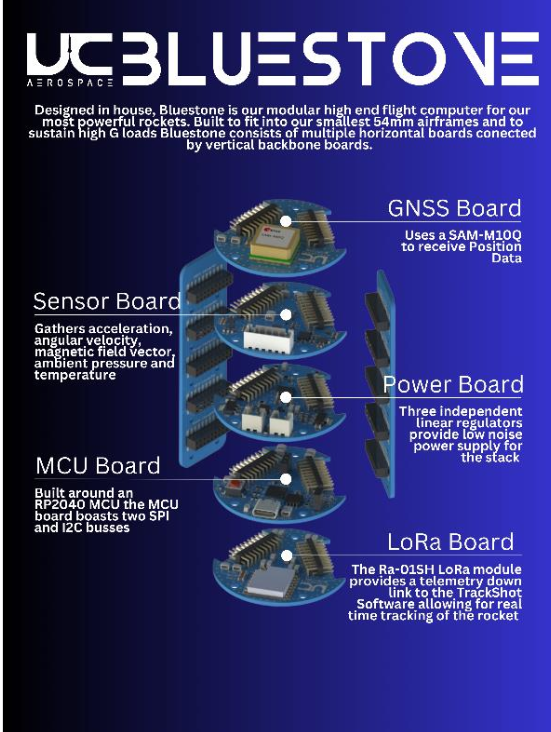

Bluestone Flight Computer
Design and implementation of a flight computer for the Bluestone Avionics System.


In my first year at university, I contributed to the development of a flight computer for a high-altitude model rocket by designing the system’s power board.
I designed a printed circuit board in KiCad to integrate with a larger avionics system, responsible for regulating power across all components. The design incorporated decoupling capacitors to stabilise voltage and mitigate transient drops from sensor loads, along with standard circuit design practices for reliability.
I then assembled the board, soldering a majority of surface-mount components, and later developed drivers for several components within the overall flight system.
This project provided my first experience with PCB design and system integration, and gave insight into collaborative development within a larger avionics team.
In the following year, I led continued development of the system, refining the design and expanding my understanding of component selection under pressure, inertial, thermal, and vibration constraints typical of aerospace applications.